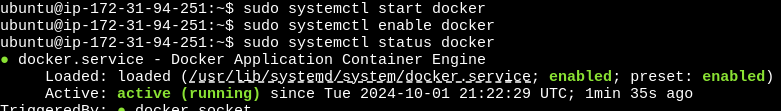
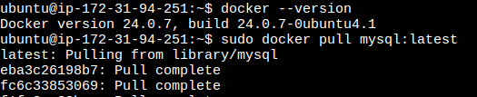
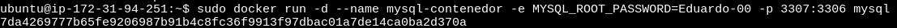
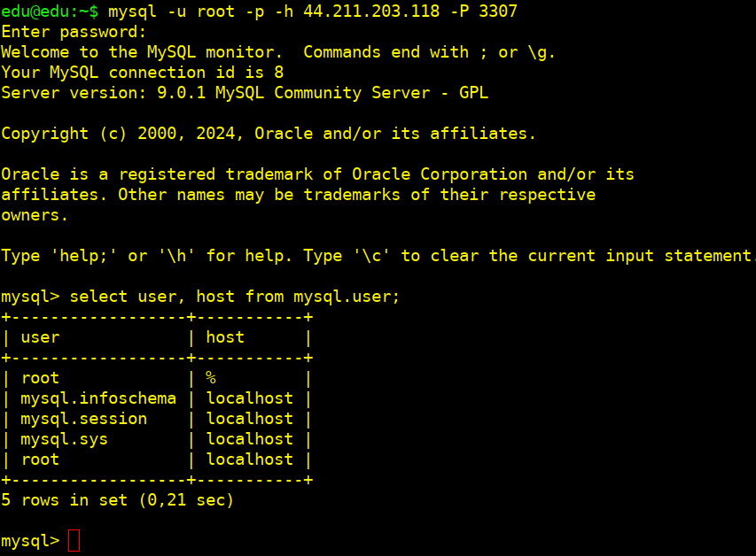

Detalle
PARTE 1: Configuramos en AWS con ubuntu y mysql (con apt install)
Configuramos el acceso desde el host por ssh primero al equipo ubuntu y a mysql desde éste:


Configuramos contraseña para el usuario root:
sudo su
select user, host, plugin from user;
alter user 'root'@'localhost' identified with caching_sha2_password by 'contraseña';
flush privileges;

Accedemos al archivo de configuración para permitir conexiones remotas modificando la opción:
bind-address: 0.0.0.0
sudo nano /etc/mysql/mysql.conf.d/mysqld.cnf
Reiniciamos mysql:
sudo systemctl restart mysql.service
Comprobamos los puertos que tenemos abiertos en el firewall ufw y habilitamos el puerto 3306:
sudo ufw status
sudo ufw allow 3306

Creamos un usuario para podernos conectar desde cualquier IP y le damos permisos:
create user 'usuario'@'%' identified by 'contraseña';
grant all privileges on *.* to 'usuario'@'%';
flush privileges;
select user, host, from mysql.user;

Ajustamos reglas del Grupo de Seguridad en AWS (MySQL en puerto 3306):
Que lo tenemos indicado en el resumen inicial de la instancia. Asignar los permisos en el host para el fichero de la clave .pem:
sudo chmod 400 /ruta del fichero.pem
Conectamos por ssh a la MV AWS:
ssh -i /ruta/a/tu-clave.pem ubuntu@<DNS de IPv4 pública> (resumen de la instancia)

Utilizamos el usuario que hemos creado para podernos conectar desde cualquier IP:
PARTE 2: Vamos a crear una instancia en AWS EC2
Donde podamos ejecutar MySQL Server en un contenedor Docker y acceder desde nuestro host local a través del puerto 3307:
Accedemos al grupo de seguridad y editamos las reglas para agregar una y poder abrir el puerto 3306 (mysql) y 3307/tcp para permitir el acceso a éste desde nuestro host:

Conectamos y verificamos que la tenemos actualizada:
sudo apt update && sudo apt dist-upgrade -y
Instalamos Docker
sudo apt install docker.io
Nos aseguramoa que docker está en ejecución

Reiniciamos
sudo reboot
Descargamos la imagen de mysql
docker versión
sudo docker pull mysql:latest

Una vez tengamos descargada la imagen, iniciaremos el contenedor de MySQL y mapearemos el puerto 3307 de la instancia EC2 al puerto 3306 del contenedor:
sudo docker run -d --name nombre-del-contenedor -e MYSQL_ROOT_PASSWORD=contraseña -p 3307:3306 mysql

Con esto hacemos lo siguiente
• -d: Ejecutamos el contenedor en modo separado .
• --name mysql-contenedor : Asigna un nombre al contenedor.
• -e MYSQL_ROOT_PASSWORD=mi_contraseña: Establecemos la contraseña del usuario root de MySQL.
• -p 3307:3306: Mapeamos el puerto 3307 de la instancia EC2 al puerto 3306 del contenedor MySQL.
Verificamos
sudo docker ps
Nos conectamos desde nuestro host a la instancia de AWS-docker-mysql por medio de la IP publica de ésta y por el puerto 3307:
mysql -u root -p -h ip-pública -P 3307
select user, host, from mysql.user;
